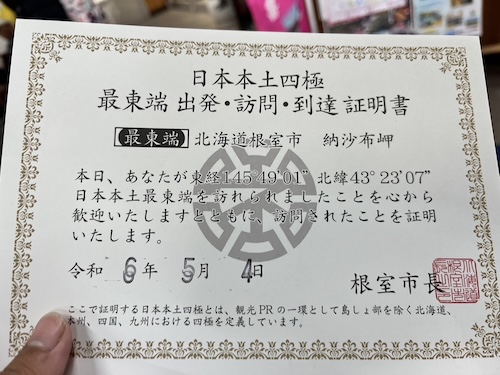
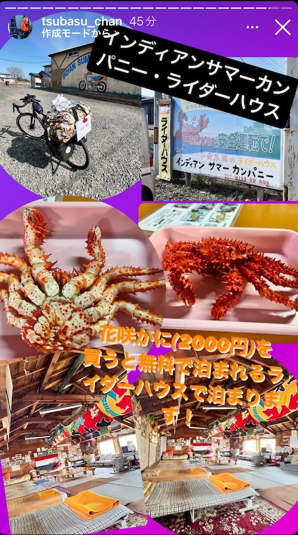

TSUBASAの旅 - 2024/05/04 曇り
日本本土四極ってのがあるって
TSUBASAの北海道旅。日本本土四極というのがあるらしく、その到達証明書をドヤられた。

熊遭遇率が多い地域みたいなので、早く通過して欲しいとハラハラしている沖縄勢。そんな沖縄の緊張感も知らず自由に北海道を満喫しているようです。この日彼が泊まる宿がユニークで、カニを2000円分食べたら宿泊無料だとか。バイク乗りやチャリンカーを支援するライダーハウスというもののようです。北海道にはこうした旅人を支援するスポットがあちこちにあります。泊まってみたい。
